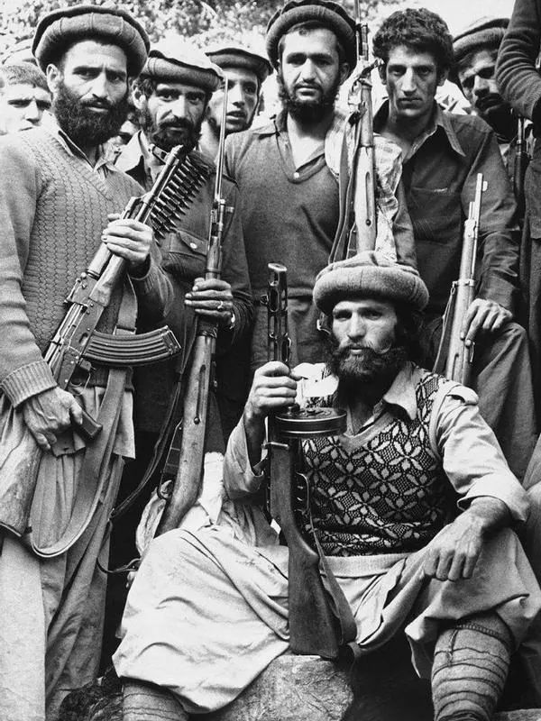
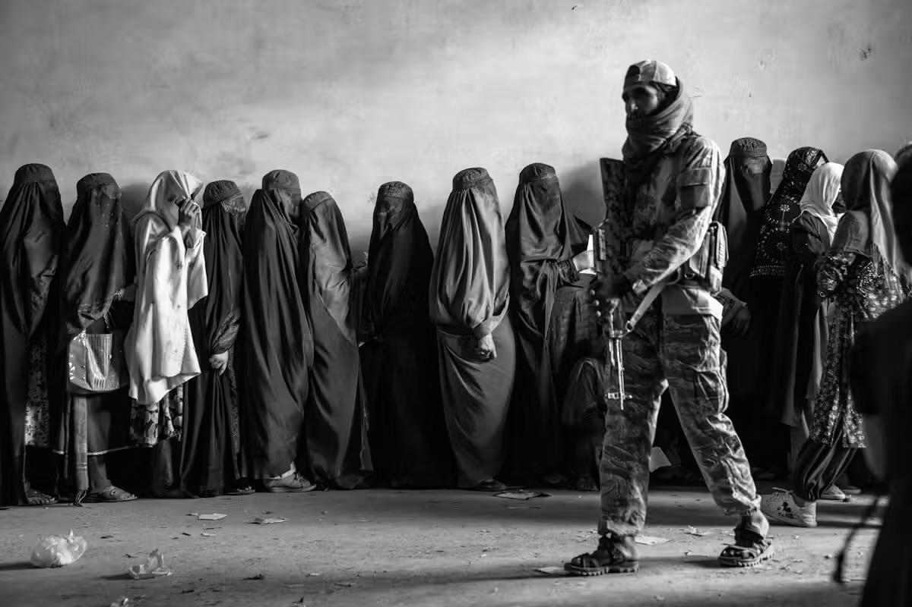
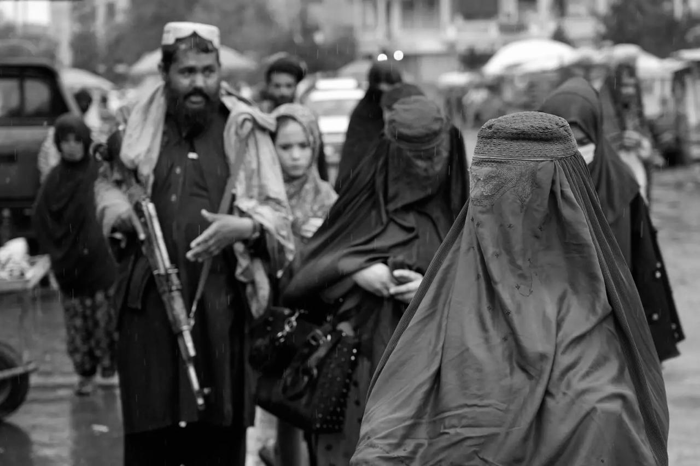
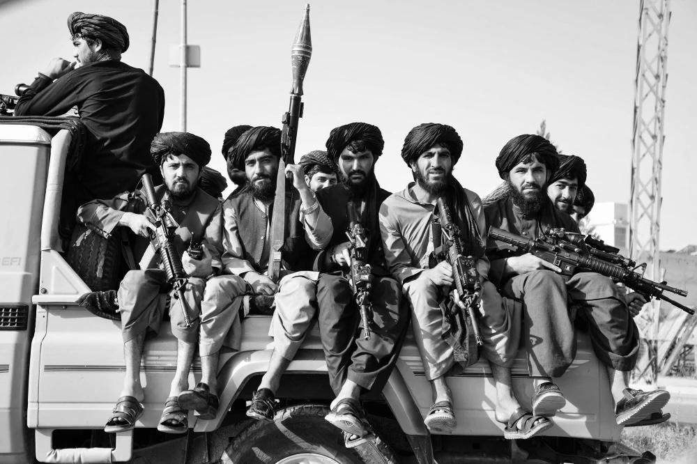

La libertad arrebatada: el
ascenso de los talibanes
La llegada de los talibanes al poder marcó un cambio profundo en la vida de las mujeres afganas. Las restricciones impuestas desde 1996 transformaron sus rutinas y limitaron su acceso a la educación, el trabajo y los espacios públicos. Tras la caída del régimen en 2001, muchas recuperaron oportunidades que parecían perdidas y comenzaron a construir nuevos proyectos personales y profesionales.
Sin embargo, estos avances convivieron con la violencia y la desigualdad, dejando sus derechos expuestos a la inestabilidad del país. El regreso de los talibanes en 2021 volvió a interrumpir ese proceso, imponiendo nuevas prohibiciones y cerrando puertas que habían logrado abrirse.
Este capítulo recorre una historia de cambios bruscos, expectativas frustradas y decisiones políticas que alteraron profundamente el futuro de millones de mujeres y niñas.
Cuando la libertad comenzó a desaparecer
Tras la caída del gobierno respaldado por la Unión Soviética en 1992, Afganistán entró en una nueva etapa de guerra civil. Los enfrentamientos entre grupos armados provocaron destrucción, desplazamientos y graves violaciones de derechos humanos.
En medio de este escenario surgieron los talibanes, un movimiento político y religioso que tomó Kabul en septiembre de 1996 e instauró un gobierno basado en su interpretación estricta de la ley islámica.
Las mujeres fueron especialmente afectadas por sus políticas. Se prohibió la educación de las niñas, se restringió severamente el trabajo femenino y se impusieron normas de vestimenta y movilidad. Muchas mujeres quedaron confinadas al ámbito doméstico, perdiendo gran parte de su autonomía económica y social.
Veinte años de reconstrucción
En 2001, el primer gobierno talibán cayó tras la intervención militar encabezada por Estados Unidos. Durante las dos décadas siguientes, Afganistán experimentó una recuperación parcial de los derechos de las mujeres.
La Constitución de 2004 reconoció la igualdad de derechos entre hombres y mujeres y estableció mecanismos de representación femenina en el Parlamento.
Miles de niñas regresaron a las escuelas, más mujeres accedieron a estudios superiores y algunas comenzaron a desempeñarse como periodis-

tas, políticas, abogadas, empresarias y profesionales de la salud.
No obstante, los avances fueron desiguales. La violencia, la pobreza y la discriminación continuaron limitando las oportunidades de numerosas mujeres, especialmente fuera de las grandes ciudades.
2021: el regreso al pasado
El 15 de agosto de 2021, los talibanes retomaron el control de Kabul tras la retirada de las fuerzas internacionales y el colapso del gobierno afgano.
Su regreso marcó el inicio de

una nueva etapa de restricciones. Mujeres que habían construido carreras profesionales, estudiado en universidades o participado en la política comenzaron a perder espacios de participación.
Para una generación que había crecido con mayores posibilidades educativas, el cambio significó la interrupción de proyectos personales, laborales y académicos.
La recuperación de derechos durante veinte años demostró que las mujeres podían desempeñar un papel activo en la sociedad afgana, pero también evidenció la fragilidad de esos avances frente a los cambios de poder.

Un futuro en suspenso
Para quienes habían crecido después de 2001, estos cambios significaron enfrentarse a una realidad que conocían principalmente por las historias de generaciones anteriores. La posibilidad de construir un futuro independiente comenzó a verse amenazada por decisiones que escapaban de su control.
A pesar del temor y la incertidumbre, algunas mujeres salieron a las calles de Kabul para exigir educación, trabajo y participación política. Sus manifestaciones demostraron que, incluso ante las restricciones, existía
una generación dispuesta a defender los derechos que había conocido.
El regreso de los talibanes no solo modificó el presente de las mujeres afganas, sino que abrió una nueva etapa de exclusión cuyas consecuencias continuarían profundizándose durante los años siguientes. La lucha por conservar sus derechos se convirtió nuevamente en una parte fundamental de su historia.
Esta nueva realidad también transformó la manera en que las mujeres imaginaban su futuro. Los proyectos que antes parecían posibles comenzaron a depender de restricciones cada vez mayores, mien-
tras la incertidumbre se extendía entre las familias. Para muchas jóvenes, conservar la esperanza de regresar a las aulas, recuperar sus empleos y participar libremente en la sociedad se convirtió en una forma de resistencia frente a los cambios que atravesaba el país.
